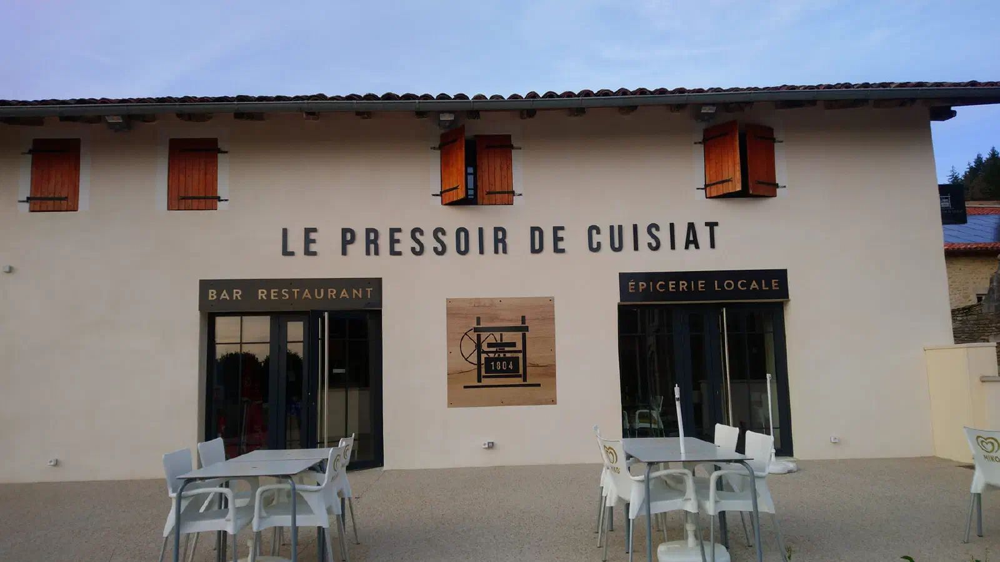
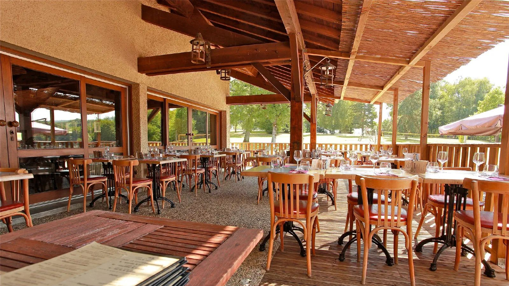
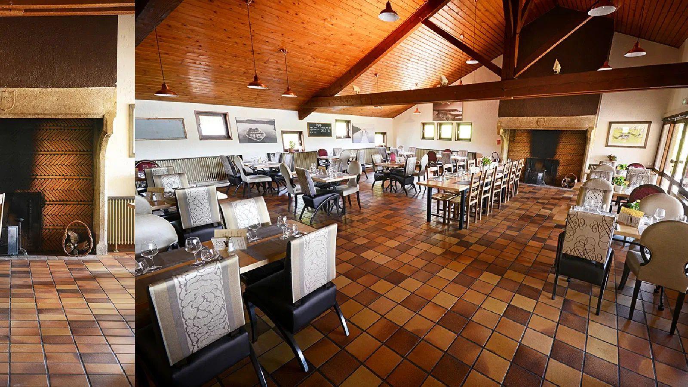
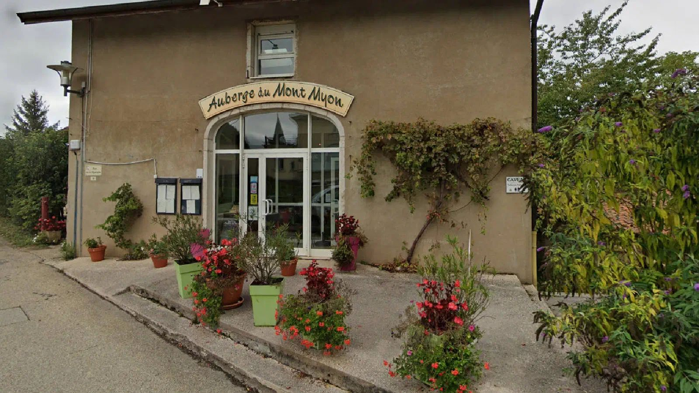
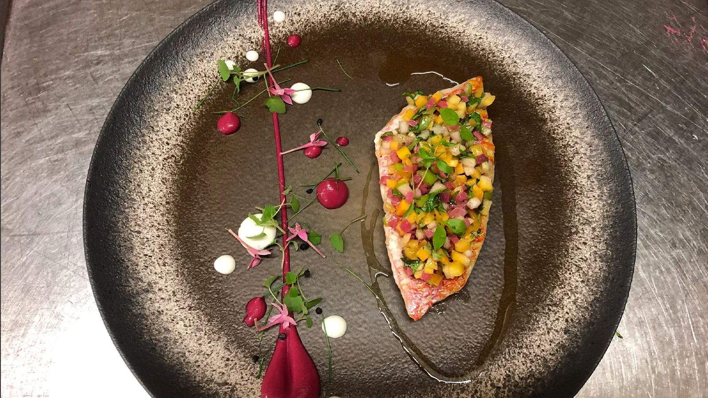
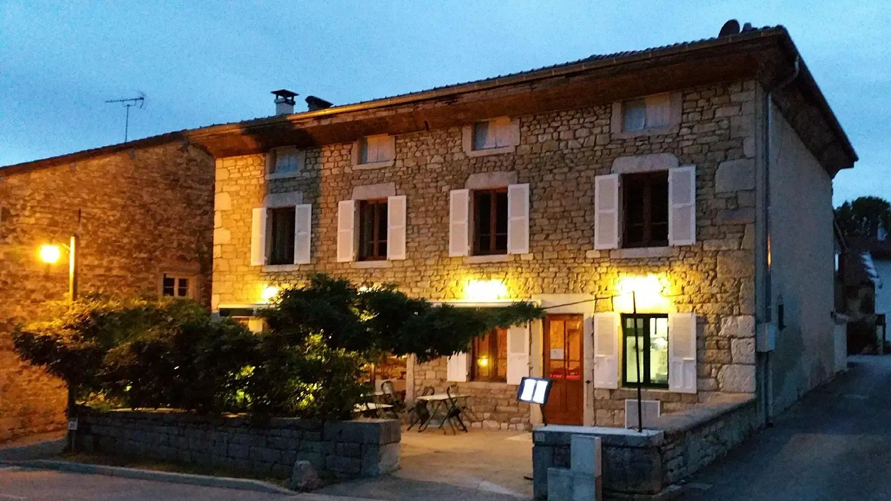
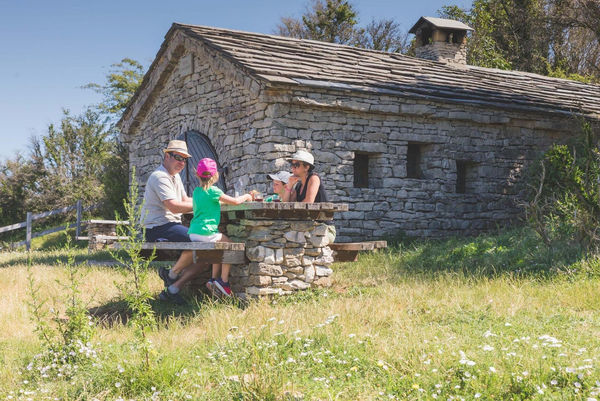

€

Cuisiat
Le Pressoir de Cuisiat
Pizzas maison croustillantes et galettes bretonnes au cœur du village. La spécialité : la morbiflette.
53 rue Principale, 01370 Val-Revermont04 74 23 07 40

Le Restaurant de la Grange du Pin est à deux pas du camping. Et autour, quatre bonnes tables pour tous les budgets.
À deux pas du camping, Rémy vous fait découvrir une cuisine maison de terroir : friture, volaille de Bresse, côte de bœuf. Pour un repas entre potes, ou juste pour boire un verre en profitant du cadre.
Restaurant indépendant du camping.


De la pizza du village au chef passé par des maisons étoilées : quatre adresses à Cuisiat, Pressiat et Treffort.

Pizzas maison croustillantes et galettes bretonnes au cœur du village. La spécialité : la morbiflette.

Petite auberge de village, cuisine traditionnelle maison et terrasse avec vue sur le Mont Myon et ses parapentistes.

Sur la place du Champ de Foire, des plats traditionnels revisités par le chef avec des produits frais et locaux.

Une maison bressane en pierre, une cuisine créative de saison par un chef formé dans des maisons étoilées. Pour les grandes occasions.
Bande de 4-5 amis (20-25 ans) autour d'un barbecue sur la terrasse d'un lodge safari, à la tombée de la nuit, guirlandes allumées, rires.

Remplissez la glacière, montez au Mont Myon et regardez le soleil se coucher sur la Bresse, pendant que les derniers parapentes se posent.